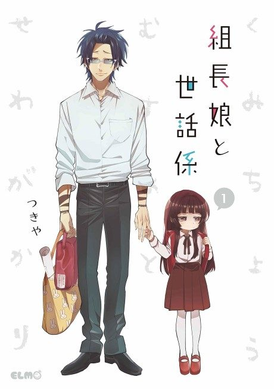

The Yakuza's Guide to Babysitting
組長娘と世話係
Kirishima, a feared yakuza, is ordered by his boss to look after his young daughter.
After the anime, read the manga from Chapter 40.
7.7AniList score
—Animeter, no votes yet
12episodes
Rate it or report where you stopped
Anime finished. Where does the manga pick up?
Start at Chapter40
The anime ends with volume 4, so start at chapter 40. It skipped or rearranged some earlier chapters (such as 3-4, 10, 18-19, 23-27 and 30-32).
139ongoing
Season 1Start reading here
More like The Yakuza's Guide to Babysitting
 Done8.1
Done8.1
 Manga Ch. 618.1
Manga Ch. 618.1
 Unclear8.7
Unclear8.7
 Done8.2
Done8.2
 Film8.1
Film8.1
 Manga Ch. 807.1
Manga Ch. 807.1
 Manga Mission 888.3
Manga Mission 888.3
 Manga Ch. 258.1
Manga Ch. 258.1
 Unclear7.2
Unclear7.2
Unclear6.8
Koikimo Film7.7
Film7.7
 Unclear7.4
Unclear7.4